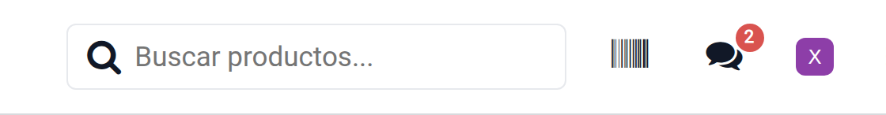
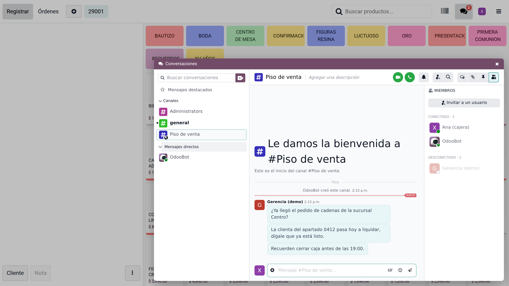
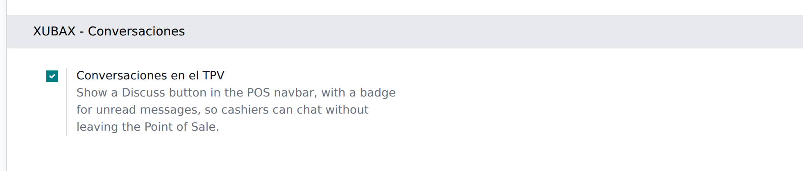

POS Discuss – Odoo Chat inside the Point of Sale
A Discuss button in the POS navbar, right next to the cashier avatar, with a
badge for unread messages. One click opens the real Odoo Discuss over
the Point of Sale.
The problem
Cashiers spend their whole shift on the Point of Sale screen, where Odoo
gives them no way to see the messages the rest of the company sends them.
To read a question from the office they have to leave the POS, open the
back office, go to Discuss and come back to the register — so in
practice the messages simply go unread.
The button sits between the barcode scanner and the cashier avatar, and
turns red only when something is waiting:

One click and the real Discuss opens over the Point of Sale —
channels, threads, members and composer, exactly as in the back office:

What the cashier gets
- The same channels and the same messages as Discuss outside the POS.
- The native Discuss interface: identical message styling, avatars,
threads, replies, reactions, emojis, attachments, mentions and search.
It is not a re-implementation, so it looks and behaves exactly like the
Discuss your users already know — and it keeps up with Odoo
automatically.
- A panel that opens over the POS and closes again: the order in
progress is never lost and the session is not interrupted.
- The button sits immediately to the left of the cashier avatar,
where the person using the register — and their messages —
already are.
A badge that shows the same number as Odoo
The badge repeats the count of the Discuss systray in the back office,
from Odoo’s own read state. Odoo does not count unread
messages: a conversation with forty pending messages counts one,
like a conversation with one, and muted or closed conversations count
nothing.
- Messages read anywhere — Discuss on the web, on the phone, in the
systray — stop counting in the POS too, and the other way round.
- The badge empties while the panel is open, as the cashier reads.
- No field is added to mail.message, no read flags are
duplicated and no message is ever created outside the standard
Discuss flow.
Configuration
Settings › Point of Sale › XUBAX - Discuss › Discuss in
the POS — one switch per Point of Sale, enabled by default.
Nothing else to set up.

Screenshots taken on a Spanish-language Odoo 19 install — the module
ships English and Spanish (es_MX) translations.
Technical notes
- The panel embeds the standard Discuss action of the same Odoo session,
so every access right, channel membership and notification setting
applies unchanged. The back-office top bar is hidden inside the panel:
cashiers get Discuss, not a door into the back office.
- Cashiers need a normal internal user account — the standard
requirement for operating a Point of Sale.
- Each terminal makes one small request every 15 seconds to refresh the
badge; the conversation itself is kept live by Discuss through the bus.
Compatibility
- Odoo 19.0 Community and Enterprise.
- Depends on Point of Sale (point_of_sale) and Discuss (mail).